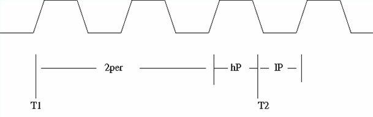

PulseWidth
This test method measures the pulse width of signals with TMU. Both high pulse width and low pulse width are measured. The time stamps of some rising edges and falling edges are captured.
The high pulse width and low pulse width are calculated from the timing stamps. The number of events discarded between two samples must be even. Otherwise the same edge is always captured.
Note that the valid prescaler value in this test method (derived from the datarate parameter) is an integer from 2 to 16, but that this actually means 2.5, 3.5, ..., 16.5 in the following sense: If the prescaler is set to a value n, then after selecting an edge it skips the next n edges of the same type and then (this is the additional 0.5) selects the next edge of the opposite type. The following figure shows this for n = 2 in the case where no events are discarded between samples. T1 and T2 are the samples that are used for the positive pulse (hP) measurement.

Parameter |
Type |
Description |
|---|---|---|
pins |
PinString |
The digital pin(s) or pin group(s) to be measured. |
datarate [Mbps] |
double |
The maximum expected data rate of the signals to be measured in the unit [Mbps]. |
sample_per_meas |
int |
The number of samples in each measurement. |
initial_discard |
int |
The events to be discarded after arming Default is 0. |
inter_sample_discard |
int |
The number of events to discard between two samples. Default is 0. |
exit if TMU has not finished |
int |
This flag to control whether the testmethod exits without uploading the results when the TMU has not finished the measurement. It can be: 0: Upload the results or 1: do not upload the results Default is 0. |
wait timeout [s] |
double |
The time to wait for the TMU to finish the measurement. The default value is 1e-6. The time depends on how long the TMU will run. |
ftstResult |
int |
The flag indicating whether the functional test result is taken into account of the final pass/fail result. It can be: 0: do not include the functional test result 1: include the functional test result Default is 1. |
output |
string |
Whether to output the message to the UI report window. It can be: ReportUI: output to report window. None: do not output to report window. Default is None. |
testName |
string |
The test names to be used as limits. Default is meanHighPulse. If you want to use the test names defined in the test table or testflow limits, type in the test names manually. Make sure the test names are in the Test name column of the test table (Refer to Structure of a TMLimits CSV file) or in the Test Name column of Tests page of Flow Data Editor. |
meanHighPulse |
The pass range of the mean value of the high pulse width. |
meanLowPulse |
The pass range of the mean value of the low pulse width. |
Implementation pseudo code
IF not connected THEN connect DUT ENDIF Set up TMU with specified parameters Execute TMU measurement Disable TMU Upload raw data Calculate pulse width from raw data Judge and log test results Judge and log functional test result if specified
Functional changes
- Introduced in SmarTest 7.1.1
- SmarTest 7.1.3: New parameter exit if TMU has not finished and wait timeout[s] with TML 2.1.5 in SmarTest 7.1.3.2.